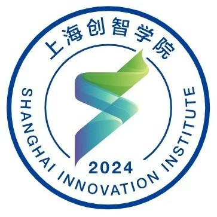
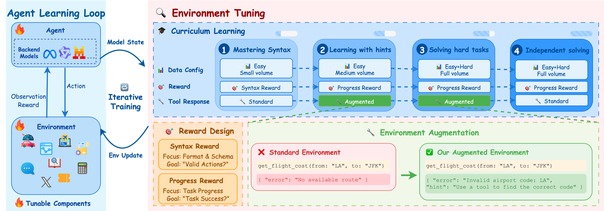
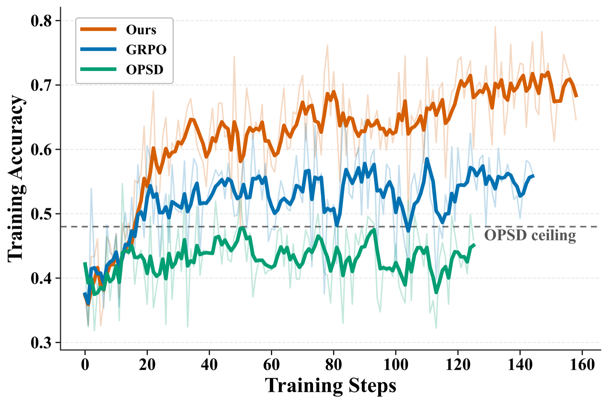
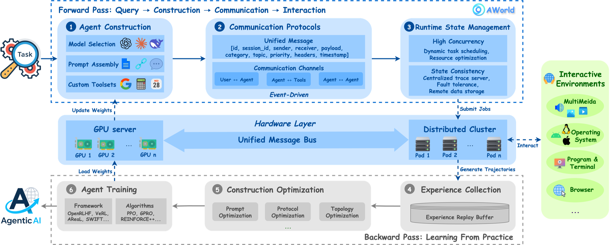
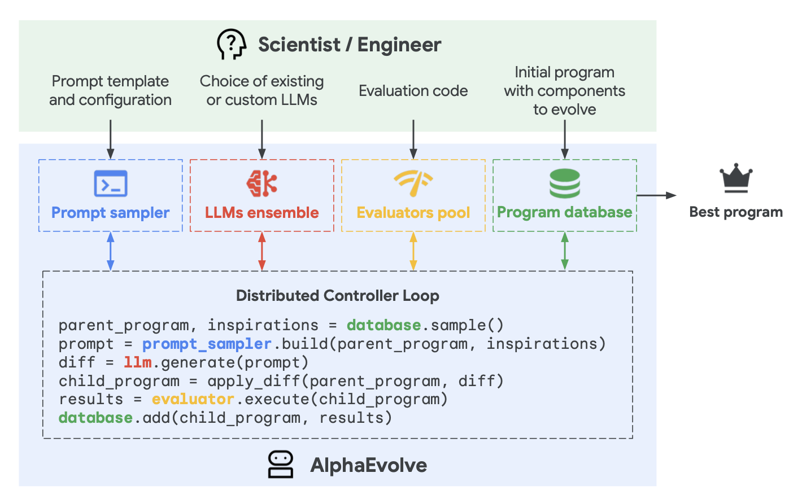
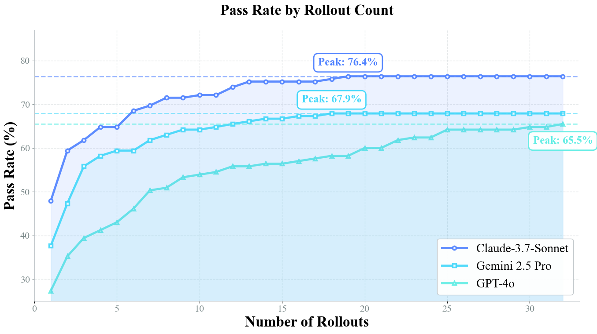

上海创智学院 · 博士研究生开题报告
面向自我改进智能体的
长程强化学习方法与系统研究
Long-Horizon Reinforcement Learning for Self-Improving Agents: Methods and Systems
报告人：路思远 · 专业 / 领域：人工智能 · 导师组组长：温颖 · 2026 年 10 月
专业背景：大模型智能体的强化学习后训练
教育背景
- 2025 – 至今 浙江大学 计算机科学与技术 博士在读
西湖大学联合培养 · 人工智能方向 - 2021 – 2025 北京邮电大学 物联网工程 本科
伦敦玛丽女王大学联合培养 · 均分 90.97 · 排名 7 / 182
研究经历
- 蚂蚁集团 AWorld 团队 · 研究实习 2025.06 – 2026.06
多轮工具调用的强化学习后训练：冷启动、信用分配、经验生成 - 上海创智学院科研轮转 · 导师 刘鹏飞 2026.03 – 2026.09
SWE 环境规模化合成 · 异步多轮 RL 框架；两项考核均为优秀
代表性成果 （* 共同第一作者）
Don't Just Fine-tune the Agent, Tune the Environment
ICLR 2026 · 共同第一作者*（署名第一）· Environment Tuning
Teach the Magnitude, Not the Direction
EMNLP 2026 主会 · 共同第一作者* · CrEST
AWorld: Orchestrating the Training Recipe for Agentic AI
技术报告 · 共同第一作者*
开源 T3RL 作者（50+ stars）· AWorld 贡献者（1.2k stars）
研究主线
多轮工具调用 RL：ET · CrEST→
规模化经验生成：AWorld · T3RL→
长程 SWE：环境合成 · 异步 RL→
本课题：长程 + 自我改进
递归自我改进：从设想走向工程实践
超智能机器能够设计出更好的机器——「最后一项需要人类完成的发明」
I. J. Good, 1965 [1]
AI 用当前的智能，改进产生其智能的认知机制
Yudkowsky, 2008 · Recursive Self-Improvement (RSI)
大模型智能体在编程、科研等数字化任务上快速进步，这一反馈回路开始可测量：
1% → 26%
某前沿 AI 企业内部研发中，由 AI 在仅有高层监督下独立完成的比例（2026.03 → 2026.08）[3]
7 → 3 个月
AI 可完成任务时长的翻倍周期，2024 年以来明显加速[3]
现有自我改进回路：改进停留在权重之外
原作者：权重进入回路是下一步，但代价高
- AlphaEvolve：发现 4×4 复矩阵乘法的 48 次标量乘法算法；作者将「把增强能力蒸馏回下一代基座」列为下一步，改进自身的反馈周期以月计[4]
- DGM：SWE-bench 由 20.0% 升至 50.0%；「改写训练脚本、更新基础模型」留作未来工作，仅改代码一次运行约两周[5]
- ThetaEvolve / TTT-Discover：权重进入回路确有收益，但 RL 单元是「一次提示—一次生成—一个分数」[7,8]
- Lilian Weng：完整的自我改进需让模型同时更新权重；训练稳定性、Goodhart 效应等仍是开放问题[Weng, 2026]
缺口：以多步智能体形式运行的长程改进回路，尚未实现有效的权重更新。
权重进入回路，本质是长程智能体强化学习
成百上千轮「提议—执行—评估」→
每轮多步交互：读代码 · 跑实验 · 改实现→
奖励稀疏、高度延迟→
典型的长程决策任务
算法瓶颈：组内比较 + 轨迹级信号
- 以 GRPO 为代表的组相对方法需对同一任务采样一组轨迹：组内耗时差异大，整组全对 / 全错时信号归零[9,10]
- 无价值函数，只有轨迹级优势：稀疏的终局奖励难以分配到具体步骤
系统瓶颈：经验生成远慢于参数更新
- 长程任务中大量算力等待最慢的轨迹，训练侧长时间空闲
- 训推解耦的异步执行可提升吞吐，但引入策略滞后与离策略偏差，损害稳定性[12]
二者相互耦合：异步执行要求算法容忍离策略数据；放弃分组采样又要求更可靠的价值估计 —— 算法—系统协同设计是本课题的出发点。
研究目标与关键科学问题
自我改进智能体：利用自身与环境交互产生的经验和信号更新模型权重，使下一轮能力由当前能力所生成的训练信号决定。
总体目标：研究长程智能体任务上的高效强化学习方法与系统，使模型权重能够以可接受的代价进入长程自我改进回路。
科学问题一 · 对应研究内容一
单条轨迹上的步级信用分配
长程、仅有终局奖励时，如何在单条轨迹上实现低方差的步级信用分配？
难点：不依赖分组、逐轮验证与外部教师，获得足够准确的状态价值估计；价值模型冷启动，长序列夹杂环境观测、结构不一
目标 样本效率（达到同等性能所需的交互量）与最终性能优于 GRPO 类方法
科学问题二 · 对应研究内容二
异步训练的效率—稳定性平衡
经验生成与参数更新解耦后，如何在效率与稳定性之间取得可控的平衡？
难点：一条长轨迹由多个版本的策略先后生成；序列级重要性权重随长度近似指数退化；训推数值不一致、沙箱故障放大偏差
目标 训练稳定前提下，单位时间有效训练样本量显著高于同步训练，缩短墙钟时间
科学问题三 · 对应研究内容三
回路经验 → 下一轮训练信号
自我改进回路产生的非平稳、多策略经验，能否以及如何转化为下一轮的有效训练信号？
难点：环境状态随回路不断变化，同一状态往往只有一条反馈、评估代价高；需防止回路自身的偏差放大与奖励投机
目标 在至少一类长程自我改进场景中闭合权重层回路，效率与效果优于冻结权重的回路
技术路线
研究内容一：以状态价值估计取代组内比较
① 价值模型
面向「模型输出—环境观测」交替、长度与结构不一的智能体轨迹，研究输入表示、训练目标与步级优势的计算[12]
② 价值预训练
用训练过程中各版本策略产生的轨迹预训练并持续更新价值模型——多样策略经验缓解冷启动[34]
③ 过渡与兜底
以跨迭代（SPO）、跨任务批内（BASIS）统计基线过渡；必要时与组内基线自适应切换[10,32]
$\delta_t = r_t + \gamma V_\phi(s_{t+1}) - V_\phi(s_t),\quad \hat{A}_t = \sum_{l \ge 0} (\gamma\lambda)^l \, \delta_{t+l}$
起点：PPO + GAE 的步级优势[29,30]，$t$ 以智能体步为单位
预期：不依赖分组采样、逐轮验证与外部教师，样本效率与最终性能优于 GRPO 类及前期轮次级方法。
研究内容二：训推解耦的异步长程训练系统
① 异步经验生成
轨迹完成即进入训练队列，不再等待整批或整组采样结束
② 离策略修正
基于推理侧对数概率的 token 级重要性采样与双侧裁剪；限制陈旧度上限，逐步放开异步程度
③ 长轨迹管理
长轨迹的上下文与显存管理，支撑更长的交互序列
④ 沙箱调度与容错
大规模沙箱的调度、故障检测与恢复，降低系统引入的数据噪声
$\rho_t = \dfrac{\pi_\theta(a_t \mid s_t)}{\pi_{\text{rollout}}(a_t \mid s_t)}$
$\tilde{\rho}_t = \mathrm{clip}\big(\rho_t,\, 1-\epsilon_{\text{low}},\, 1+\epsilon_{\text{high}}\big)$
基础：AWorld 分布式沙箱（14.6×）· T3RL token 级对齐 · 异步多轮框架 siirl-agentic
警示：异步训练中标准 GRPO 约 160 步即崩溃[12]——稳定性须与效率一起设计
研究内容三：协同设计，闭合权重层自我改进回路
协同设计
- 系统的异步程度决定离策略偏差，进而决定价值估计与重要性修正的要求
- 单轨迹信号的需求，反过来决定采样与调度方式
场景验证
- 回路中环境状态（代码库、解的档案）不断变化，同一状态往往只有一条反馈
- 用回路积累的多版本策略轨迹预训练价值模型，以 RL 更新权重[12,34]
- 对照冻结权重的回路，比较改进效率与最终效果；先在评估快的短任务验证，再扩展长度
安全约束
- 可验证奖励作为信用分配的最终依据，评估器置于回路之外，抑制偏差放大与奖励投机
创新点
现有工作
本课题
01
问题定位
冻结权重的搜索回路：在权重不变的前提下改进任务解、代码或探索策略
→
权重层的学习回路：把自我改进视为长程智能体任务，以「当前能力生成下一轮训练信号」组织算法与系统，使模型权重成为被持续改进的对象
02
信用分配
组内比较 + 逐轮可验证奖励，包括申请人前期的轮次级方法 ET / CrEST
→
基于状态价值的长程信用分配：面向结构不一的智能体轨迹设计价值估计，以多版本策略经验训练并持续更新价值模型，单条轨迹获得低方差的步级信用
03
训练系统
单纯追求吞吐的异步系统；以同步训练为前提的算法改进——二者割裂
→
算法—系统协同设计：离策略修正、价值估计与异步经验生成作为整体设计，在稳定前提下提升长程训练效率，并闭合权重层回路
三点合起来回答一个问题：如何让模型权重以可接受的代价进入长程自我改进回路。
前期基础一：从环境反馈中稳定学习，细粒度信用分配
Environment Tuning ICLR 2026 · 共同第一作者*

7.00→36.92
Qwen2.5-7B，BFCL V3 多轮准确率（%）
54.34
watt-tool-8B，超过 GPT-4o 51.00、o3 49.25
400
个问题实例训练，无需专家轨迹
单阶段 GRPO 仅 17.42%，约 70 步梯度爆炸；课程 + 环境增强 + 逐轮进度奖励使训练稳定[13]
CrEST EMNLP 2026 主会 · 共同第一作者*

52.00
Qwen3-4B，BFCL V3；GRPO 43.63 · 自蒸馏 OPSD 38.75
13 / 14
项指标最佳或并列最佳（2 规模 × 2 基准）
验证器定方向、自教师定幅度：仅轮次拆分 47.88、仅 token 调制 48.75，二者结合 52.00；约 20 步即超过 OPSD 上限[14]
启示：只有问题实例、没有专家轨迹时，模型能依靠环境反馈从自身经验中稳定学习——这正是自我改进的基本形态。局限：依赖分组采样、轮次对齐与逐轮验证 → 研究内容一。
前期基础二：规模化经验生成与长程训练系统
AWorld 技术报告 · 共同第一作者*

14.6×
一轮 rollout：7695 s → 525 s（分布式执行）
32.23%
Qwen3-32B GAIA pass@1（原 21.59），超过 GPT-4o 27.91
12→32
未参与训练的 xbench-DeepSearch，泛化提升
科研轮转 导师 刘鹏飞 · 两项均为优秀
真实场景 Agent Training
SWE 环境合成管线：智能体自动完成仓库探索、任务构建与验证，已稳定合成数十万可复现环境；仅用 900 余个环境的轨迹做 SFT，Qwen3-30B-A3B 在 SWE-bench Verified 达 57%
大模型 RL × infra 联合优化
异步多轮 RL 框架 siirl-agentic（MPMD：数据调度 / 多轮 rollout / 分布式训练解耦）；打通 SWE-agent → E2B 沙箱链路，实现沙箱失效检测与重建；完成 Qwen3-4B/8B 的 SWE-bench GRPO 训练验证，改进均已合入主线
开源 T3RL：多轮训练中 log-prob、loss mask 与响应长度严格 token 级对齐
前期边界 → 出发点
依赖分组采样与逐轮验证 → 研究内容一
「先采样、后更新」的同步训练 → 研究内容二
任务长度中等 → 研究内容三
预期成果
3–4 篇
学术论文
人工智能领域高水平会议或期刊；每项研究内容至少 1 篇
1 套
开源系统
面向长程智能体的异步 RL 训练框架，配套训练代码与模型权重
2 项
方法与原型
单轨迹、终局奖励的长程信用分配方法；闭合权重层回路的自我改进系统原型
1 篇
学位论文
完成博士学位论文
如何检验：每项内容都有明确的对照与指标
| 研究内容 | 对照 | 核心指标 |
|---|---|---|
| 一 · 信用分配 | GRPO 类；前期 ET / CrEST | 样本效率（达到同等性能所需的环境交互量）· 最终性能 |
| 二 · 训练系统 | 同步训练 | 训练稳定性 · 单位时间有效训练样本量 · 墙钟时间 |
| 三 · 自我改进 | 冻结权重的回路 | 改进效率 · 最终效果 |
评测基准：BFCL · τ²-bench · GAIA · SWE-bench，均公开可用
模型规模：前期已在 4B–32B 上完成 RL 训练，学院与团队算力可支撑同等规模实验
研究进度安排
阶段
2026.11 – 2030.06
阶段性成果
研究内容一：长程信用分配2026.11 – 2027.10
信用分配方法与对比验证；论文 1 篇
研究内容二：异步训练系统2027.05 – 2028.06
异步长程 RL 框架开源；论文 1 篇
研究内容三：协同设计与场景验证2028.01 – 2029.12
协同设计 · 短任务验证长程闭环 · 对比冻结权重
权重层回路原型；论文 1–2 篇
综合实验验证与成果整理2029.07 – 2029.12
更大规模评测；发布代码与权重
学位论文撰写2030.01 – 2030.02
学位论文初稿
修改、预答辩、送审与答辩2030.03 – 2030.06
学位论文定稿，完成答辩
2027202820292030
交叉安排：研究内容一形成方法原型后启动二，按价值估计的需求设计系统；异步框架可用后启动三，用两年完成短任务验证与长程闭环。
当前进展：三项前期工作（ET · CrEST · AWorld）已发表或公开，两项科研轮转已完成——研究内容一可于 2026.11 直接启动。
谢谢各位老师
恳请批评指正
路思远 · lusiyuanzs@gmail.com · github.com/IcyFish332
可行性分析与风险对策
可行性
- 理论基础：策略梯度、优势估计与价值函数学习（PPO、GAE）及离策略重要性采样均有成熟理论；单轨迹优化与异步训练已有初步方法与实证[10,12,37]
- 前期基础：冷启动与稀疏奖励、细粒度信用分配、大规模经验生成三个环节均已验证，方法与代码可复用
- 技术条件：熟悉 SGLang、vLLM 推理引擎与 verl、slime 训练框架；T3RL 作者、AWorld 贡献者
- 计算资源：前期已在 4B–32B 模型上完成 RL 训练；依托团队与学院平台
风险与对策
| 风险 | 对策 |
|---|---|
| 长程价值函数难以训练 | 退回跨迭代、跨任务的统计式基线，或在价值估计与组内基线之间自适应切换 |
| 异步训练不稳定 | 限制数据陈旧度上限，采用更严格的 token 级裁剪，逐步放开异步程度 |
| 自我改进场景评估成本高 | 先在任务较短、评估较快的场景验证方法，再逐步扩展任务长度 |
| 出现新的训练范式 | 科学问题仍然成立，具体方法随之更新 |
长程反馈下的信用分配：现有方法族对比
| 方法族 | 代表工作 | 需分组采样 | 信号粒度 | 主要局限 |
|---|---|---|---|---|
| 组相对 | GRPO · DAPO · GiGPO · MT-GRPO | 是 | 轨迹 / 步 / 轮次 | 长程下组内同步等待、退化组；轮次级要求轮次对齐与逐轮验证[9,20,25,26] |
| 教师信号 | OPD · OPSD · CrEST | 视方法而定 | token 级 | 性能上限受教师约束；OPSD 约 77% 梯度集中在前 5% 的 token；CrEST 以验证器限定方向[14,27,28] |
| 价值函数 | PPO + GAE · VAPO | 否 | token / 步级 | 价值模型冷启动；长程、多轮智能体轨迹上拟合困难，缺乏系统验证[29–31] |
| 单轨迹 | SPO · BASIS · SR-PPO · SAO | 否 | 轨迹 / token 级 | 以跨迭代 / 批内统计或学习的价值替代组内基线；价值冷启动仍是瓶颈[10,12,32,33] |
| 本课题 | 状态价值 + 多版本经验预训练 + 统计基线兜底 | 否 | 智能体步级 | 面向非平稳、多策略的自我改进经验，与异步系统协同设计 |
连续控制中的证据：仅用单一策略数据预训练的价值函数与微调目标不匹配，需要多样策略的经验[34]——这正是自我改进回路天然积累的数据。
代表性系统：生成—验证—筛选—复用，权重冻结


- AlphaEvolve：4×4 复矩阵乘法 48 次标量乘法；优化了训练自身底层模型的计算内核
- DGM：SWE-bench 20.0% → 50.0%；以基准结果作为改进有益的经验证据
- Dream-RSI：把历史发现过程组织为回放模拟器，低成本改进探索策略[6]
- 共同点：被改进的是任务解、智能体代码与探索策略，底层模型权重始终冻结
初步实验结果：Environment Tuning 与 CrEST
表 1 BFCL V3 多轮平均准确率（%）[13]
| 基座模型 | 训练前 | +ToolRL | +ET |
|---|---|---|---|
| Qwen2.5-7B-Instruct | 7.00 | 18.00 | 36.92 |
| Llama-3.1-8B-Instruct | 5.48 | 11.25 | 28.25 |
| ToolACE-2-Llama-3.1-8B | 37.99 | 33.75 | 47.18 |
| watt-tool-8B | 35.74 | 42.00 | 54.34 |
训练集 400 条（四类各 100），无专家轨迹；分布外 ACEBench：ToolACE-2 由 8.34 升至 15.00，直接 RL 降至 6.65。
表 2 CrEST 与基线对比（%）[14]
| 方法 | 4B · BFCL | 4B · 会话 | 8B · BFCL | 8B · 会话 |
|---|---|---|---|---|
| 基座模型 | 22.12 | 3.13 | 33.38 | 4.69 |
| GRPO | 43.63 | 4.69 | 43.25 | 5.47 |
| MT-GRPO | 49.25 | 6.25 | 44.00 | 7.03 |
| Environment Tuning | 47.25 | 4.69 | 46.00 | 7.81 |
| OPD | 44.50 | 6.25 | 44.75 | 3.91 |
| OPSD | 38.75 | 4.69 | 41.75 | 3.91 |
| CrEST | 52.00 | 7.03 | 50.00 | 9.38 |
会话：WildToolBench 会话级准确率；Qwen3-4B / 8B-Instruct，所有方法组大小 G = 16。
初步实验结果：AWorld 规模化经验生成

表 3 一轮「采样—训练」耗时（秒）[11]
| 执行方式 | rollout | 训练 | 总耗时 |
|---|---|---|---|
| AWorld 分布式执行器 | 525 | 144 | 669 |
| 单节点顺序执行器 | 7695 | 144 | 7839 |
- 充足的经验生成是获得正向学习信号的前提
- Qwen3-32B：先以 886 条成功轨迹 SFT 缓解冷启动，再以 GRPO 训练（每题 32 条轨迹）
- GAIA 测试集 pass@1 由 21.59% 升至 32.23%，与 DeepSeek-V3（31.89%）相当；Level 3 达 16.33%，为所列模型最高
主要参考文献 （编号与开题报告一致）
[1] Good. Speculations concerning the first ultraintelligent machine. 1966.
[3] Chan et al. What if automating AI R&D triggers an intelligence explosion? 2026.
[4] Novikov et al. AlphaEvolve: a coding agent for scientific and algorithmic discovery. 2025.
[5] Zhang et al. Darwin Gödel Machine: open-ended evolution of self-improving agents. 2025.
[6] Zheng et al. Dream-RSI: recursive self-improvement through evolving worlds. 2026.
[7] Wang et al. ThetaEvolve: test-time learning on open problems. 2025.
[8] Yuksekgonul et al. Learning to discover at test time. 2026.
[9] Shao et al. DeepSeekMath (GRPO). 2024.
[10] Xu & Ding. Single-stream policy optimization. 2025.
[11] Yu*, Lu* et al. AWorld: orchestrating the training recipe for agentic AI. 2025.
[12] Hou et al. Single-rollout asynchronous optimization for agentic RL. 2026.
[13] Lu*, Wang* et al. Don't just fine-tune the agent, tune the environment. ICLR 2026.
[14] Wang*, Lu* et al. Teach the magnitude, not the direction. EMNLP 2026.
[16] Hu, Lu, Clune. Automated design of agentic systems. ICLR 2025.
[17] Zelikman et al. STaR: bootstrapping reasoning with reasoning. NeurIPS 2022.
[18] Huang et al. R-Zero: self-evolving reasoning LLM from zero data. ICLR 2026.
[20] Yu et al. DAPO. 2025. [25] Feng et al. GiGPO. 2025. [26] Wei et al. MT-GRPO. 2025.
[27] Lu, Thinking Machines Lab. On-policy distillation. 2025.
[28] Zhao et al. Self-distilled reasoner (OPSD). 2026.
[29] Schulman et al. Proximal policy optimization. 2017.
[30] Schulman et al. Generalized advantage estimation. ICLR 2016.
[31] Yue et al. VAPO. 2025. [32] Gong et al. BASIS. 2026.
[33] Che et al. Learning with a single rollout via Monte Carlo Pass@k critic. 2026.
[34] Dong et al. Do you really need to pretrain Q-functions for online RL fine-tuning? 2026.
[37] Fu et al. AReaL: large-scale asynchronous RL for language reasoning. 2025.
[Weng, 2026] Weng. Harness engineering for self-improvement. Lil'Log, 2026.
Yudkowsky. Artificial intelligence as a positive and negative factor in global risk. 2008.